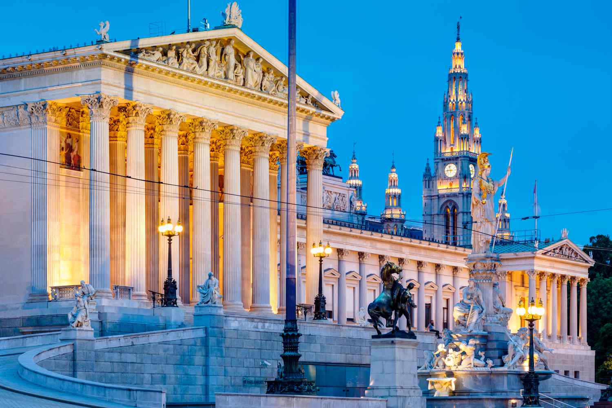

ВИКЕНД ПОНУДА

ВИКЕНД ВО ВИЕНА
Виена, Австрија
11.11 - 13.11
Откријте ја прекрасната Виена, градот на императорските палати, класичната музика и австриската традиција. Прошетајте низ историскиот центар, восхитете се на прекрасната архитектура и уживајте во познатата виенска атмосфера. Совршена викенд понуда за љубителите на историјата, културата, шопингот и добрата храна.
ВИЕНСКА АВАНТУРА
Еден од најубавите европски градови, познат по својата царска историја, раскошната архитектура и богатата културна традиција. Градот е препознатлив по историскиот центар, Катедралата Свети Стефан и познатата Рингштрасе, која е опкружена со импресивни градби и плоштади.
Една од најпознатите палати во Виена и поранешна царска резиденција, позната по својата раскошна архитектура и прекрасните уредени градини. Палатата нуди можност за запознавање со животот и историјата на Хабсбуршката династија.
Историскиот дел на градот исполнет со раскошни палати, плоштади и монументални градби поврзани со богатото наследство на Хабсбуршката монархија. Посебно се издвојува Хофбург, поранешниот царски комплекс и еден од најзначајните симболи на Виена.
Импресивен барокен дворец познат по својата архитектура, уредените градини и богатата уметничка колекција. Комплексот нуди прекрасна атмосфера за прошетка и уживање во еден од најубавите историски предели на Виена.
Состанок со групата на аеродром во Скопје, 2 часа пред летот. Следува директен лет до Виена и пристигнување на аеродромот. По завршувањето на аеродромските процедури, организиран трансфер до хотелот и сместување. По пристигнувањето следува организирана прошетка низ централниот дел на градот. Следува прошетка по Рингштрасе и разгледување на познатите градски градби и плоштади. Потоа следува посета на плоштадот Марија Терезиен и прошетка кон историскиот центар. Предвидено е слободно време за ручек, кафе и индивидуално разгледување. Во продолжение следува посета на Катедралата Свети Стефан и прошетка низ околните пешачки улици. Попладнето следува сместување во хотел и време за одмор. Во вечерните часови е предвидена слободна прошетка низ центарот на Виена, со можност за вечера и уживање во градската атмосфера. Ноќевање во хотел.
Појадок во хотелот и организирано заминување кон Палатата Шенбрун. Следува разгледување на палатата и прошетка низ нејзините прекрасни градини, со време за фотографирање и уживање во околината. По посетата следува слободно време за ручек. Во продолжение следува враќање кон центарот и разгледување на Хофбург, поранешниот царски комплекс во срцето на Виена. Следува прошетка низ околните плоштади и улици и слободно време за индивидуално разгледување. Вечерта е слободна за вечера, кафе и одмор. Ноќевање во хотел.
Појадок во хотелот и одјавување согласно предвиденото време. Следува утринска посета на палатата Белведере и прошетка низ нејзините уредени градини. Предвидено е време за фотографирање и уживање во околината. Потоа следува враќање кон центарот на Виена и слободно време за ручек, кафе и последен шопинг. Во попладневните часови е предвидена последна прошетка низ центарот и слободно време за индивидуални активности. Во попладневните часови следува собирање на групата и организирано поаѓање кон аердром. По завршување на аеродромските процедури следи директен лет кон Скопје. По пристигнувањето и преземањето на багажот завршува организираното патување.